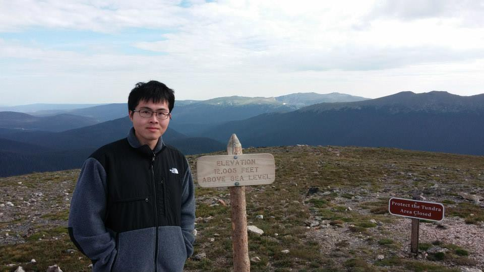

Jun Hong
I’m a mathematician and former university lecturer, now studying physics and chemistry at CU Boulder.
My interests are in the physical sciences and computing. Outside of coursework, I enjoy reading books and watching TV shows.
View resume
Open to Work
I am currently seeking internship and research opportunities for 2027. If you have a position that may be a good fit, please reach out to me via email or LinkedIn.